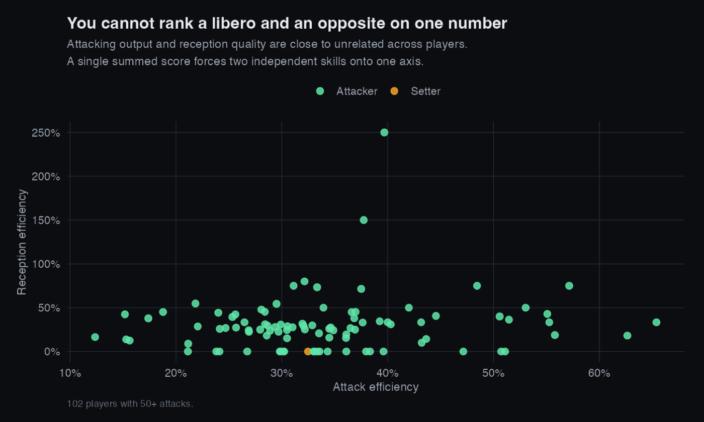

Auditing My Own Analysis
I wrote a volleyball statistics analysis for a class, published it, and later found that one of its central metrics was mathematically impossible and one of its main conclusions was circular. This is how I found both problems and what the data actually says once they are fixed.
Why this project is here
Every other project on this site is work I did carefully from the start. This one is different, and I am including it deliberately. The original version of this analysis went out with real errors in it, and I would rather show what I did about that than quietly delete the file.
The reason is that finding the mistake is the part of the job that actually matters. Anyone can produce a chart. Being the person who checks whether the numbers are possible before anyone else does is the difference between an analyst you can trust and one you cannot.
Problem one: a metric that could not exist
The original analysis computed attack efficiency as
(Attack Points − Attack Errors) / Attack Attempts, which looks completely
reasonable. It produced values above 1.0 for 36 players, with a maximum of 2.83. A player
cannot score more kills than the number of attacks they took, so those numbers were not just
high, they were impossible.
The cause was in the source data rather than my arithmetic. The official FIVB attack table has three columns, Point, Fault and Shot, where Shot means an attack that was dug and stayed in play. The dataset I used had relabelled Shot as “Attack Attempts”. I had been dividing by only the attacks that came back, which is a much smaller number than the real total.
The correct denominator is Points plus Errors plus Shots:
| Denominator | min | median | max | impossible (>1.0) |
|---|---|---|---|---|
| Original | 0.25 | 0.87 | 2.83 | 36 |
| Corrected | 0.12 | 0.33 | 0.65 | 0 |
Elite international attack efficiency runs roughly 0.25 to 0.40, so a median of 0.33 is where it should be.
The part worth remembering. Reception has a column with the same name and it does not have this problem, because there “Receive Attempts” genuinely is the total. If I had pattern matched and applied the same fix to all three skills, I would have broken the one that was already correct. The same word meant different things in different tables of one file, and the only way to tell was checking each result against a range I knew from the sport.
Problem two: the sample sizes were doing the talking
The original treated all 305 players equally. But a rate computed on three attempts is not really a measurement, and the data shows exactly how much that matters.

So everything downstream uses a minimum of 50 attacks, which keeps 102 of the 305 players. That threshold is the same question I am asking in my Stake Factor project, which is how many observations you need before a number means anything. Different sport, identical statistics.
Problem three: the main conclusion was circular
The original built a Player Score by summing counting stats, roughly
Attack Points − Attack Errors + Block Points − Block Errors + Serve Points
− Serve Errors + Successful Receives + Spike Digs. It then correlated those same
stats against that score and reported the strongest ones as the stats that matter most.
That cannot work. Those stats are the score, so a strong correlation is arithmetic rather than evidence. I would have got the same answer from random numbers summed the same way.
The giveaway was in my own results. Receive Errors correlated +0.57 with the score and Attack Errors +0.42. Making more mistakes predicted a higher rating. That only happens when what you are really measuring is how much someone played.
The fix is to score each stat against a total rebuilt without that stat, so the arithmetic guarantee is gone.

What the data actually says
Once the circularity is removed, the more interesting result is not which stat wins. It is that the whole idea of a single score is wrong.

Checking the rate statistics against final tournament position, which was decided on the court and owes nothing to any formula of mine, gives one clear result:

Reception efficiency was the strongest single predictor of finish at r = −0.54, which does support the one conclusion the original got right. I had written that Poland's title came down to their serve receive, and that holds up now that it rests on something other than a circular score.
How much to believe this. There are twelve teams. A correlation needs to exceed roughly 0.58 in absolute value to reach conventional significance at that sample size, and none of these do. They are directional hints from a single tournament, not established effects. I would rather state that plainly than present −0.54 as a finding, because the first version of this analysis stated things far more confidently than the evidence supported.
What I would do next
- Separate ratings by role instead of one score, since the data says attacking and defending are different axes.
- Pull match level data rather than tournament totals, which would allow a split half reliability test to show which statistics are skill and which are noise.
- Shrink each player's rate toward the positional mean in proportion to their sample size, which is the standard treatment for thin samples and would handle the threshold problem more gracefully than a hard cutoff.